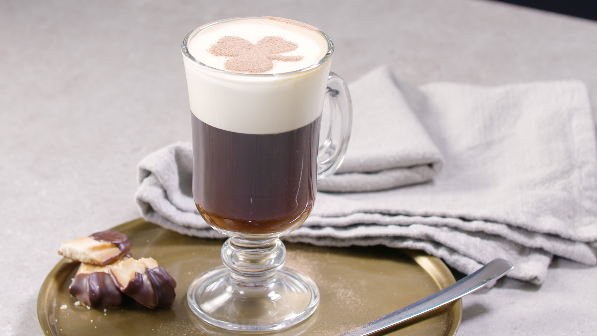

IRISH Coffee

Fresh hot coffee gets a little added pep with the addition of Irish whiskey and Irish cream.
Ingredients
1 (1.5 fluid ounce) jigger Irish cream liqueur
1 (1.5 fluid ounce) jigger Irish whiskey
1 cup hot brewed coffee
1 tablespoon whipped cream
1 dash ground nutmeg
Instructions
In a coffee mug, combine Irish cream and Irish whiskey.
Fill mug with coffee.
Top with a dab of whipped cream and a dash of nutmeg.
Return HOME
Back to Top